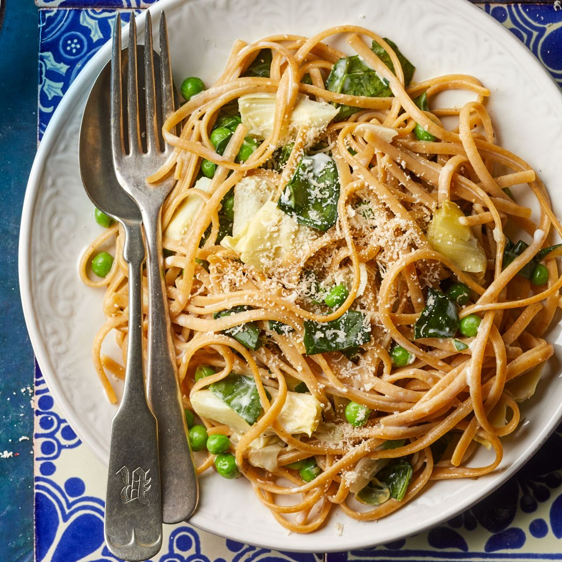

Instead of cooking pasta in a huge pot of water, here we use just 3.5 cups for this one-pot pasta recipe. When the pasta is al dente, most of the water has evaporated and the bit that's left is thickened with the starch that cooks off the pasta. With just a few add-ins like lemon and Parmesan cheese you have a delicious silky sauce. Want to use up your veggie stash in the freezer? Swap in 8 ounces frozen spinach for fresh.
